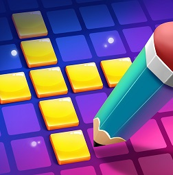

Прохождение текстовых игр
На данном сайте вы сможете найти ответы на множество текстовых игр. Это поможет вам пройти их быстрее и заработать первое место. Как правило, играть без подсказок в них сложно и скучно, поэтому и создан данный сайт. Вы можете спросить, что же отличает его от множества других? Быстрота, отсутствие рекламы, и быстрое обновление после выхода новых уровней. Думаю, этого вполне достаточно.
Просто выберите интересующую вас игру, и вперед!
|  | Cody Cross - игра, где нужно разгадывать кроссворды |